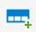

The purpose of the Event system is to send control system event information, such as alarms, warnings and notifications, from Epec devices to event consumer device. The event consumer can be an Epec device that is able to log event information. This means that the event consumer has to have non-volatile memory or a file system (for example, 6000/X Series or 5050 device).
The Event system uses CANopen PDO protocol to transfer information from event producer to event consumer. Every event producer has their own events that are transmitted to event consumer. Event consumer can also have its own events. Once the event consumer has been selected and events are created to the event producer devices, event PDOs are created. One PDO is added to Transmit PDOs and another one to Receive PDOs.
To add a new event, select icon. To delete an event, select icon.
To export list of events into a PDF or Excel file, press CTRL + SHIFT + S in Network Events view when any of the events are selected.
.
To search events, press CTRL + F.
For an event, it is possible to configure the following properties:
Configuration |
Description |
Identifier |
Numeric identification value for the event. Drag-and-drop to change the Identifier.
|
Variable |
Enumeration name that is used in CODESYS to trigger the event.
|
Level |
Level that also defines the priority for the event. By default, MultiTool Creator has three event levels: Alarm, Notification and Warning. To add or edit levels, select Open Event Levels.
|
Log |
Defines whether the data is written to a log or not
|
Popup |
Defines whether the event triggers a pop-up or not
|
Default Text |
Includes the event description text
|
Possible Event System Properties are described in the following table:
Configuration |
Description |
Is Event Consumer |
Selecting Is Event Consumer to define the device as event consumer.
|
Log Type |
Select where the event log is stored. Enabled only if Is Event Consumer is selected.
|
Log Line Count |
Define how many rows are reserved for the event log. Enabled only if Is Event Consumer is selected.
|
Max Visible Log Lines |
Defines the maximum amount of event rows shown in the event log view. Affects only when a new CODESYS project is created.
|
To view all the events in the network, select Open Network Events. This view shows the configuration for the event consumer and also a list of all network events.
To add a new event, select icon to pick the source device of the event. The event will be added to this device and it will also be seen on the device's Event tab.
To delete an existing event, select the event and then select icon.
To view and/or edit event levels, select icon.
To view and/or edit event levels, select Open Event Levels and the Project Preferences is opened.
To
add a new event level, select 
To delete an event level, select the event level and then select icon.
To reset to default event levels, select icon.
Each event level has the following configuration possibilities:
Property |
Description |
Level |
Numeric value for the level that also defines event priority (0 = highest priority). The maximum amount of event levels is 255. |
Name |
Symbolic event name |
Log |
Defines whether the data is written to a log or not |
Pop-up |
Defines whether the event triggers a pop-up or not |
Library Events tab lists all the library events. Define which events will be logged to consumer's event log and which events will trigger a pop-up action. Log must be selected in order to select pop-up.
See also,
Epec Programming and Libraries Manual > Libraries > Common Libraries for Control Units > Event Log
Epec Oy reserves all rights for improvements without prior notice.
Source file topic200015.htm
Last updated 25-Jun-2025